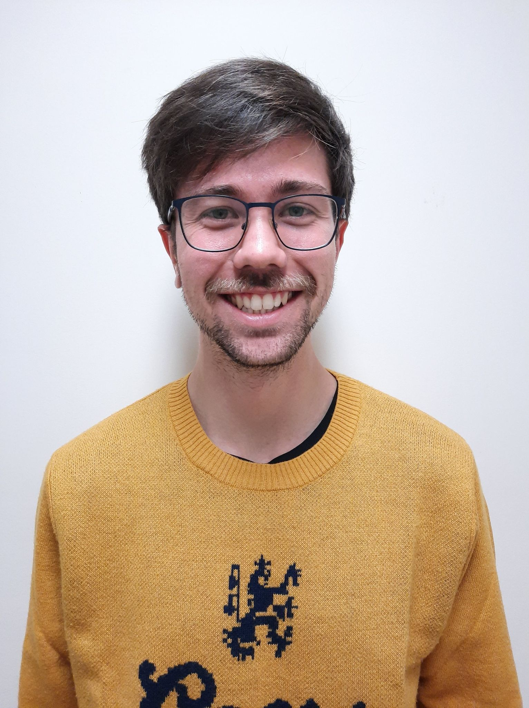
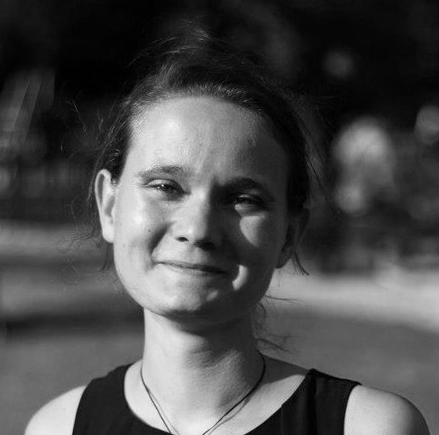
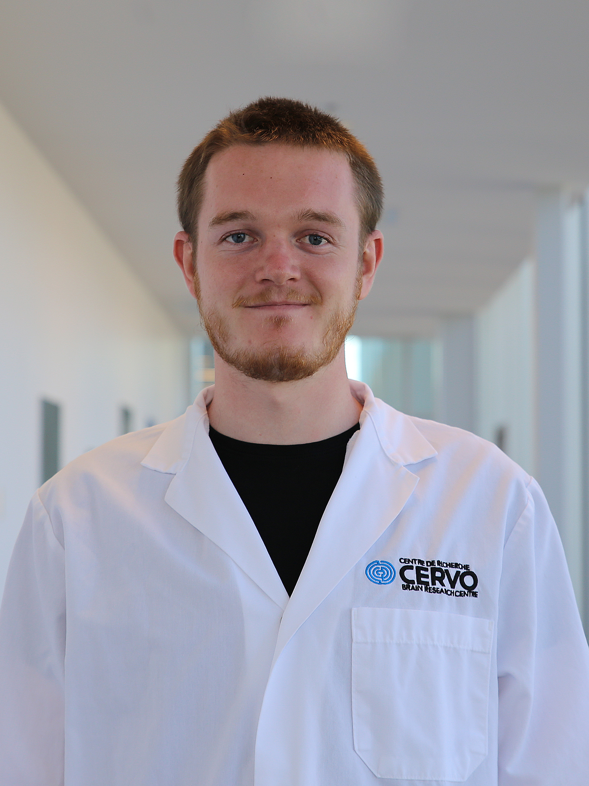
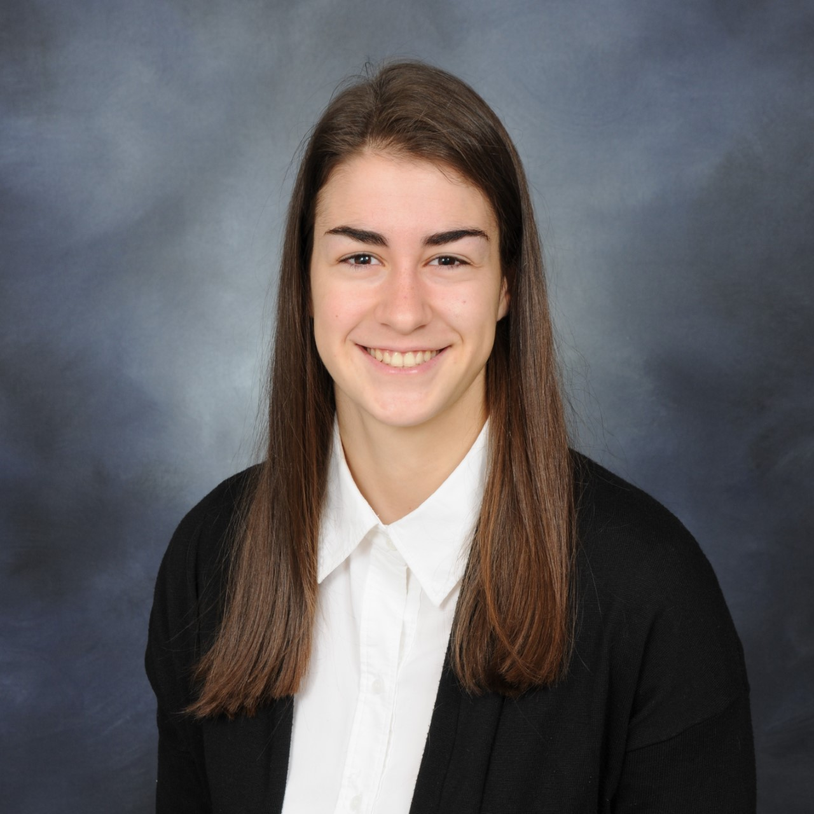
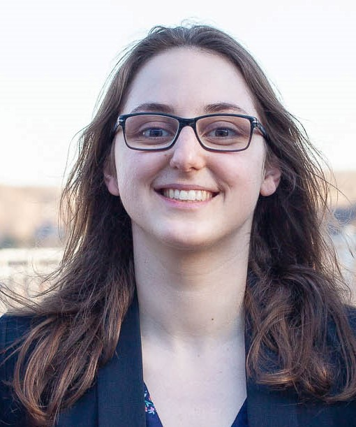

Meet the members of FLC-lab
Flavie Lavoie-Cardinal
EN
FR

Gabriel Leclerc
I apply arficial intelligence techniques on incredible biological data acquired with even more incredible microscopes. My fields of interest are broad, but not limited, to big data technologies, mathematics, information technology, astronomy, agriculture. And if I’m not sitting behind my laptop, I can be found behind my piano, on my motorcycle, lost in the mountains, in my kayak, running. Cheers!
J’applique des techniques d’intelligence artificielle sur des données biologiques incroyables acquises avec des microscopes encore plus incroyables. Mes champs d’intérêt sont larges, mais non limités, aux technologies big data, aux
mathématiques, aux
technologies de l’information, à l’astronomie, à l’agriculture. Et si je ne suis pas assis derrière mon ordinateur portable, on peut me retrouver derrière mon piano, sur ma moto, perdu en montagne, dans mon kayak, en train de courir. Au plaisir!

Benoît Turcotte
The objective of my project is to use reinforcement learning to learn an optimal imaging scheme that would allow to image Ca2+ signaling events by maximizing resolution while minimizing photobleaching. The training will be done in simulation, which means we will also study how well an optimal policy learned in simulation transfers to real life, and how we can further fine tune it.
L'objectif de mon projet est d'utiliser l'apprentissage par renforcement afin d'apprendre une politique d'imagerie optimale qui permettrai d'imager des événements de Ca2+ en maximisant la résolution tout en minimisant le photoblanchiment. L'entrainement se fera en simulation, alors nous étudierons aussi comment bien une politique optimale en simulation performe dans la vraie vie, et comment nous pouvons la peaufiner.

Theresa Wiesner
Coming from cancer research with focus on high through-put screening for drug development in the early years of my bachelor, I got fascinated during an internship with functional assays such as field recordings to study neuronal cell behaviour. I got hooked on doing my master in bio-photonics to learn functional imaging. During my PhD I combined functional assays, super-resolution imaging and computational tools to quantitatively assess and explore synaptic protein organization and remodeling due to synaptic plasticity. Being a scientist for me is not a job, but a lifestyle in which I can be continuously curious and explore across fields, be it from neuroscience, photonics to machine learning. In another life, I would be a diplomat who writes fiction books on the side.
Provenant de la recherche sur le cancer orientée sur le développement de médicaments dans mes premières années de baccalauréat, j'ai été introduite durant un stage à des méthodes fonctionnelles pour observer le comportement de cellules neuronales. J'ai rapidement décidé de faire une maîtrise en biophotonique pour apprendre l'imagerie fonctionnelle, qui me fascinait. Durant mon doctorat, je combine l'imagerie fonctionnelle et l’imagerie de haute résolution à des outils informatiques pour explorer et quantifier l'organisation et la modulation des protéines synaptiques causées par la plasticité synaptique. Être chercheuse n’est pas un travail pour moi, mais un mode de vie qui me permet de demeurer curieuse et d'explorer des sujets divers, des neurosciences à la photonique en passant par l'intelligence artificielle. Dans une autre vie, je serais diplomate qui écrit aussi des livres de fiction.

Owen Ferguson
Parkinson’s disease affects more than 10 million people worldwide, and I’m interested in the mechanisms that lead to the death of dopamine-producing neurons in the disease. I am using stem cells from human patients to create neurons with Parkinson’s disease traits and I am using super-resolution microscopy to observe the differences between the mitochondria of healthy people and Parkinson’s disease patients.
La maladie de Parkinson touche plus de 10 millions de personnes dans le monde, et je m'intéresse aux mécanismes qui conduisent à la mort des neurones producteurs de dopamine dans la maladie. J'utilise des cellules souches de patients humains pour créer des neurones présentant les caractéristiques de la maladie de Parkinson et j'utilise la microscopie à super-résolution pour observer les différences entre les mitochondries des personnes en bonne santé et celles des patients atteints de la maladie de Parkinson.

Catherine Bouchard
After a bachelor's degree in engineering physics, I'm pursuing my studies in the field of machine learning to extend my knowledge to new methods applied to subjects I was already passionate about, such as photonics and life science. My project focuses specifically on the application of deep neural networks for algorithmic super-resolution of fluorescence microscopy images; one of many applications where artificial intelligence has the potential to explode the potential for discovery by offering an alternative or enhancement to complex and expensive physical methods. It is this possibility of surpassing current capabilities with machine learning that first attracted me to the subject and continues to captivate me with each new advance.
Après un baccalauréat en génie physique, j'ai entrepris de poursuivre mes études dans le domaine de l'apprentissage machine pour étendre mes connaissances à des méthodes nouvelles appliquées à des sujets qui me passionnaient déjà, comme la photonique et la science du vivant. Mon projet porte spécifiquement sur l'application de réseaux de neurones profonds pour la super-résolution algorithmique d'images de microscopie à fluorescence; un exemple d'application parmi une multitude où l'intelligence artificielle a le potentiel de faire exploser le potentiel de découvertes en offrant une alternative ou une bonification à des méthodes physiques complexes et coûteuses. Cette possibilité de dépassement des capacités actuelles en exploitant apprentissage machine m'a d'abord attirée sur le sujet et continue de me captiver à chaque avancée.

Andréanne Deschênes
My PhD project consists in designing a multimodal super-resolution microscope which we will use to study how proteins reorganize in neurons when the strength of their connections are altered by activity. We also aim to use this microscope to investigate the influence of diet on the permeability of the gut.
Mon projet de doctorat consiste à concevoir un microscope multimodal à super-résolution que nous utiliserons pour étudier comment les protéines se réorganisent dans les neurones lorsque la force de leurs connexions est modifiée par l'activité. Nous voulons également utiliser ce microscope pour étudier l'influence de la diète sur la perméabilité de l'intestin.

Anthony Bilodeau
Anthony is a Ph. D. student in Biophotonics at CERVO brain research center under the supervision of Audrey Durand and Flavie Lavoie-Cardinal. His Ph. D. project consist in building a super-resolution microscope that will be able to adapt to the sample using reinforcement learning. During his master, Anthony developed weakly-supervised techniques to facilitate the analysis of microscopy images.
Anthony est un étudiant au Doctorat en biophotonique au Centre de recherche CERVO sous la co-supervision de Flavie Lavoie-Cardinal et Audrey Durand. Son projet de Doctorat consiste à construire un microscope de super-résolution qui sera en mesure de s'adapter à l'échantillon avec l'aide de l'apprentissage par renforcement. Au cours de sa maîtrise, Anthony a été en mesure de développer des techniques d’apprentissage profond faiblement supervisées pour analyser des images biologiques.
Renaud Bernatchez
EN
FR
Albert Michaud-Gagnon
EN
FR
Vincent Boily
EN
FR
Antoine Séverin Ollier
EN
FR